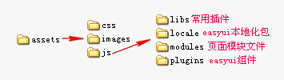
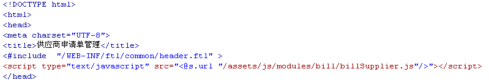

页面声明：
统一使用html5声明，即标准的页面结构如下：
静态资源结构目录如下图：

“页面模块.js”统一放置到assets/js/modules目录。例如：assets/js/modules/bill/billSupplier.js
静态资源引用：
页面只需要引用"boot.js"和"当前页面模块.js"，由于boot.js已经在header.ftl中引用，所以页面中只需要引用”当前页面模块.js“即可，不要引用其他样式文件和js文件（特殊插件引用除外）。
便于维护，尽量一个模块一个js，不要在页面中添加javascript。

easyui属性写法：
easyui所有属性统一写在 data-options中。
公共js：
基本的UI公共函数在assets/js/modules/base.js中，业务上的公共函数添加到assets/js/modules/common.js中，并在讨论组中告知所有开发人员。
模块js：
模块js统一放置到assets/js/modules目录，建议一个模块一个js，为防止变量的冲突，建议使用命名空间的写法
关于easyui扩展库：
easyui扩展库统一放置到assets/js/plugins中，并且以*.extend.js格式命名。插件调试完毕后使用grunt构建到assets/js/libs/ui.js文件。ui.js在发布前使用jsa压缩为ui.min.js。